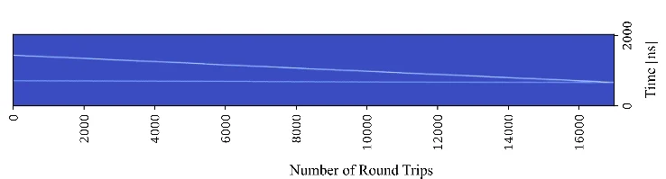
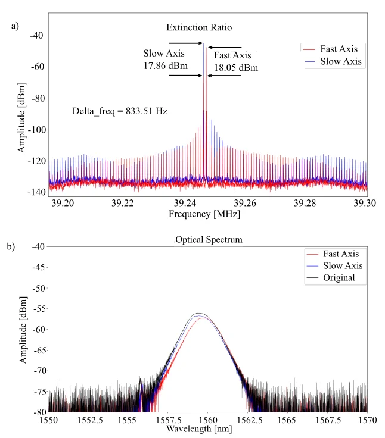
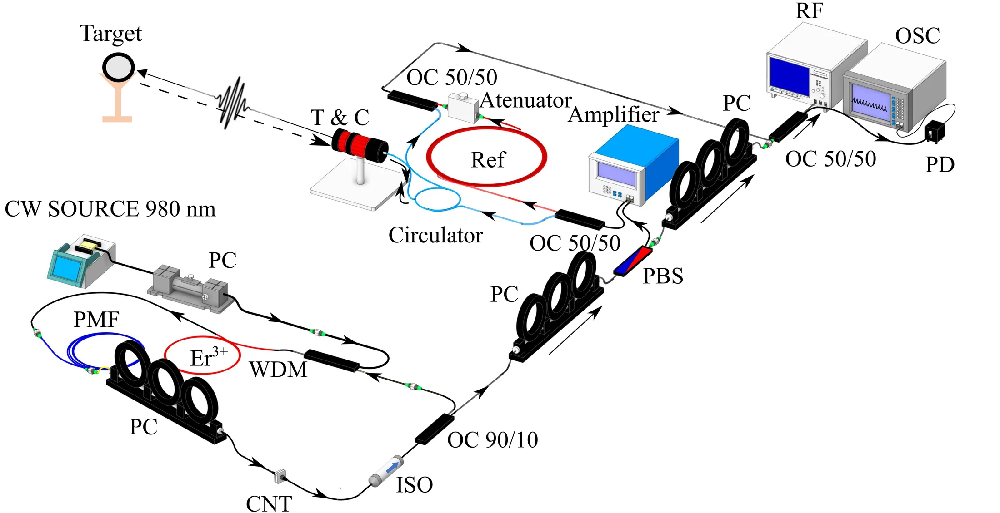
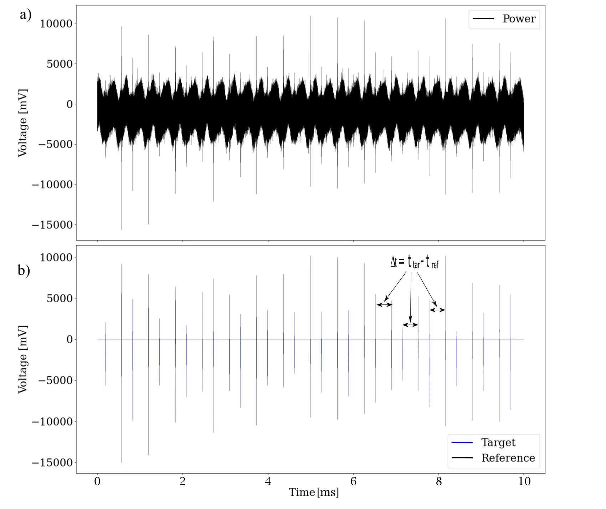
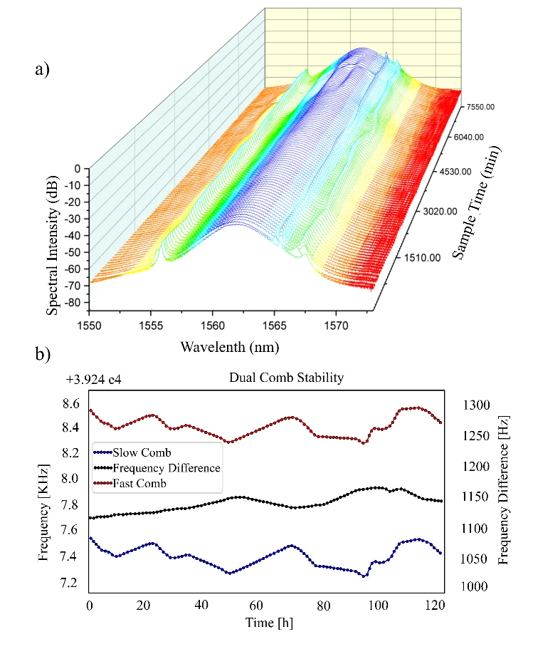
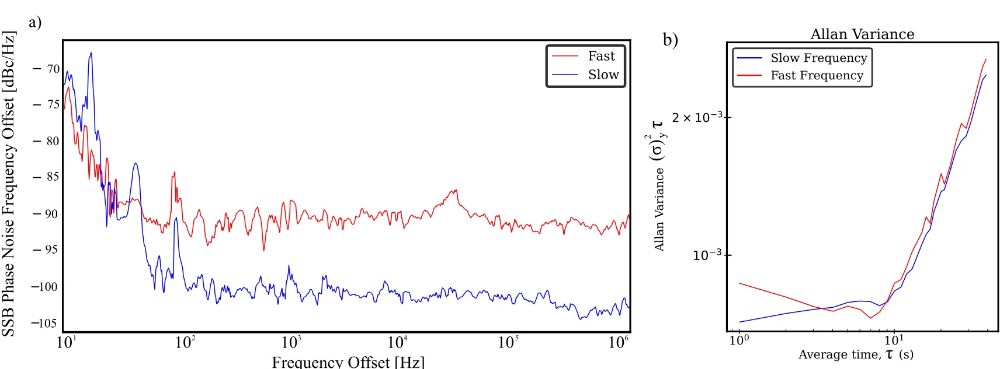

Dual-comb polarization-multiplexing ring-cavity fiber laser for ranging applications
One erbium fiber ring emits two pulse trains on orthogonal polarizations, with repetition rates a kilohertz apart. One train goes to the target, the other samples the echoes. Because their periods differ by less than a picosecond, the echo delay comes out stretched about 36 000 times, slow enough for an ordinary photodiode and oscilloscope.
Optics Express 33(8), 18161–18168 (2025) · open access
- Signal comb (fast axis), echoes
- Local oscillator (slow axis)
- Reference burst
- Target burst
Picoseconds on a slow detector
Light covers a millimetre and back in 6.7 ps. Timing an echo that finely by brute force needs a very fast photodiode and fast electronics. Dual-comb ranging avoids that. A second pulse train, with a repetition rate Δfrep away from the first, samples the echoes a little later on every round trip, like a stroboscope that drifts. The optical delay is replayed in slow motion, magnified by frep/Δfrep, and the distance comes back by multiplying the measured lab-time delay by Δfrep/frep.
The catch has always been the two combs. Two separate lasers have to be locked to each other, which is expensive and complicated. This work makes both combs in one cavity, so the vibrations and temperature changes that shift one shift the other too, and their difference stays steady without any locking.
Two combs in one ring
The cavity is 5.25 m of fiber. A wavelength-division multiplexer brings in the 980 nm pump; 45 cm of erbium-doped fiber gives gain near 1560 nm; a film of single-wall carbon nanotubes acts as the saturable absorber that locks the modes; an isolator keeps the light going one way; and a coupler lets part of it out. A 0.5 m piece of polarization-maintaining fiber and a polarization controller make the ring birefringent, so it supports two vector solitons at once, one on each axis.
The two axes differ in refractive index by Δn = 3.19 × 10−5, a beat length of 4.9 cm. That is enough for the two pulses to take slightly different times to go round. Both pass through the same fibers, so any stretch of the cavity changes both round trips together.
- Cavity
- 5.25 m ring, net anomalous dispersion
- Gain
- 45 cm Er3+ fiber (ER110-4/125), 980 nm pump
- Mode locking
- Single-wall carbon nanotube film
- Birefringence
- 0.5 m PM-1550 fiber and a polarization controller
- Repetition rate
- 39.25 MHz, round trip 25.47 ns
- Spectrum
- Centred near 1559.5 nm, 1.84 nm wide for both combs
- Output
- About 0.3 mW, both combs together
- Housing
- Laser-cut polycarbonate box, fibers held in 3D-printed trays
Watching the two pulses drift apart
A dispersive Fourier transform records the output pulse by pulse. Over 17 000 round trips the two traces stay straight and sharp, so both combs are cleanly mode-locked, and one line walks steadily towards the other. From the slope, the round trips of the two axes are 25.480056 ns and 25.479543 ns: they differ by 513 fs. That number is the step of the ranging measurement, as the section on the scale factor explains.

Separating the combs
Outside the cavity a polarization controller and a polarizing beam splitter send each comb to its own fiber, with about 18 dB of extinction on each side. The two optical spectra almost coincide: centres at 1559.78 and 1559.46 nm, widths of 1.84 nm. Sharing the band is what makes the two combs useful together, since every pair of lines can beat.

From the laser to the oscilloscope
The fast-axis comb is the signal. The slow-axis comb is the local oscillator that samples it.

- Signal. The fast comb is amplified and split in two. Half goes through a circulator and a telescope to the target and back; the other half runs through a reference fiber of known length, with an attenuator to bring both echoes to the same power so that neither buries the other. In some runs a fiber spool replaced the free-space path to avoid its losses.
- Local oscillator. The slow comb passes through a polarization controller to match the signal's polarization.
- Detection. A 50/50 coupler combines signal and local oscillator on a DC–125 MHz photodiode. A 15 MHz low-pass filter removes everything but the slow beat, and the oscilloscope records at 40 MS/s.
Why the distance scale is Δfrep/frep
Call the signal repetition rate f and the local oscillator f + Δf. Their periods are T = 1/f and slightly shorter for the local oscillator. Follow one signal pulse and the local-oscillator pulse that leaves with it.
- Each round trip, the local oscillator slips by a fixed step. The difference of the two periods is This is the 513 fs seen in the dispersive Fourier transform. It is the slide of a vernier: two scales whose divisions differ by a tiny amount.
- An echo delayed by τ is reached after τ/ΔT round trips. If the reference echo and the target echo are τ apart in optical delay, the local oscillator needs N = τ/ΔT round trips to move from one to the other.
- Those round trips take real time. Each lasts T, so the two bursts on the oscilloscope are separated by The magnification is f/Δf, the number of round trips the local oscillator takes to cross one whole period. With 39.25 MHz and 1.1 kHz it is about 35 700.
- Undo the magnification to get the distance. Measure Δt on the oscilloscope, multiply by Δf/f to recover τ, and halve the round-trip path, which is Eq. (5) of the paper: with ν the speed of light in air and Dref the known reference length.
The same factor appears in the frequency domain. Each pair of optical lines, one from each comb, beats at a radio frequency; neighbouring pairs differ by Δf instead of f. The 227 GHz optical spectrum is copied into an RF comb Δf/f times narrower, a few megahertz wide, which the photodiode and the 15 MHz filter pass easily. Time stretches by f/Δf exactly as frequency shrinks by Δf/f.
- 340 µmprecision reported, a distance
- 2.27 psthe matching round-trip delay, 2D/ν
- 81 nsthe same delay on the oscilloscope, × f/Δf
- 3 samplesat 40 MS/s, easy to resolve
frep = 39.25 MHz, optical bandwidth 227 GHz (1.84 nm), oscilloscope at 40 MS/s, as in the paper. The stability run sat between 1.1 and 1.15 kHz.
The trade-off in choosing Δf
A smaller Δf stretches more. Each oscilloscope sample then covers less distance, so timing is finer, but distances arrive more slowly, one per interferogram, and a small error in the value of Δf costs more, because it enters the scale directly. A larger Δf gives faster updates, until the RF copy of the spectrum, Δν·Δf/f wide, no longer fits below f/2 and aliases. For this laser that limit is f2/(2Δν), about 3.4 kHz. Around 1.1 kHz the interferogram is about 6 MHz wide and sits comfortably under the 15 MHz filter.
The range does not depend on Δf. In one interferogram period the local oscillator crosses exactly one signal period, so any delay longer than T folds back. The ambiguity range is ν/(2f) = 3.8 m.
Which repetition rate goes in the denominator?
Strictly the stretch is T/ΔT = (f + Δf)/Δf, and the scale changes slightly depending on whether the signal or the local-oscillator rate is used. The two differ by Δf/f ≈ 3 × 10−5, at most about 0.1 mm across the full 3.8 m range, below the 340 µm precision reported. Getting Δf itself right matters far more: a 1 Hz error at 1.1 kHz is a relative error of 0.09 %.
Ranging results
A 10 ms trace holds about fifteen pairs of bursts. Without the filter the interferograms are buried in noise; with it, they stand out. The reference is set slightly stronger than the target so the two can be told apart.

- Find the strongest point in the trace, the most intense reference burst.
- Step through the trace at the known burst period to locate every other reference burst, then the target bursts between them.
- Cut a window of 6000 samples on each side of each burst.
- Fit each burst by convolution with a template interferogram to find its centre.
- Average the target-minus-reference delays over n > 10 pairs and convert with Δf/f:
That first measurement used a fiber path. Through the telescope the target echoes were weaker and the signal-to-noise ratio lower. The precision is limited mainly because only the burst envelopes are used; adding the interferometric phase, or averaging more bursts, would improve it. The processing is simple on purpose, so that it can run later on a low-cost FPGA or microcontroller.
Stable for 125 hours, with no locking
Ranging needs Δf to be known, because it sets the scale, and to stay put while a trace is recorded. Over 125 hours at room temperature both combs kept running. Each repetition rate wandered by about 0.3 kHz with the room, but the two moved together: Δf stayed between 1108 and 1150 Hz, drifting about 1 Hz per hour and 2 Hz per hour at worst. Over a 10 ms trace that is nothing; over days it is 3 %, which is why Δf is measured alongside each trace. Dual-comb operation has been seen to last up to 250 hours, against 1 to 2 hours typical in the literature and 7 hours in the group's earlier cavity.
The gains come from small, practical changes: a shorter cavity, a shorter but more heavily doped gain fiber, fibers wound into 3D-printed trays so they cannot move, and the whole laser closed in its own box. The Allan deviation of each repetition rate stays typical of a free-running laser; the point is that the two combs share their noise, so the difference between them is far steadier than either.


What comes next
Because the two combs are orthogonally polarized, the same laser could measure how a target changes polarization as well as how far away it is, by recording the comb beats for all the Stokes parameters. Injection locking could reduce the remaining drift of Δf, and using the interferogram phase would push the precision well below the envelope-only result.
Cite and credits
A. Rodriguez Cuevas, D. Stoliarov, H. Kbashi and S. Sergeyev, “Dual-comb polarization-multiplexing ring-cavity fiber laser for ranging applications”, Optics Express 33(8), 18161–18168 (2025). doi:10.1364/OE.555772
@article{RodriguezCuevas2025,
author = {Rodriguez Cuevas, Alberto and Stoliarov, Dmitrii and
Kbashi, Hani and Sergeyev, Sergey},
title = {Dual-comb polarization-multiplexing ring-cavity fiber
laser for ranging applications},
journal = {Optics Express},
volume = {33},
number = {8},
pages = {18161--18168},
year = {2025},
doi = {10.1364/OE.555772}
}Authors
- Alberto Rodriguez CuevasAston Institute of Photonic Technologies, Aston University, Birmingham
- Dmitrii StoliarovAston Institute of Photonic Technologies, Aston University, Birmingham
- Hani KbashiAston Institute of Photonic Technologies, Aston University, Birmingham
- Sergey SergeyevAston Institute of Photonic Technologies, Aston University, Birmingham
Funded by Horizon Europe Marie Skłodowska-Curie Actions (ETN MEFISTA, 861152), EPSRC (EP/W002868/1), the Royal Academy of Engineering (IF2223B-133) and the Royal Society (IF\R1\241042RS).
Earlier work on this laser
- Polarization dynamics, stability and tunability of a dual-comb polarization-multiplexing ring-cavity fiber laserResults in Physics 46, 106260 (2023)
- Single-shot dynamics of dual-comb generation in a polarization-multiplexing fiber laserScientific Reports 13, 19673 (2023)